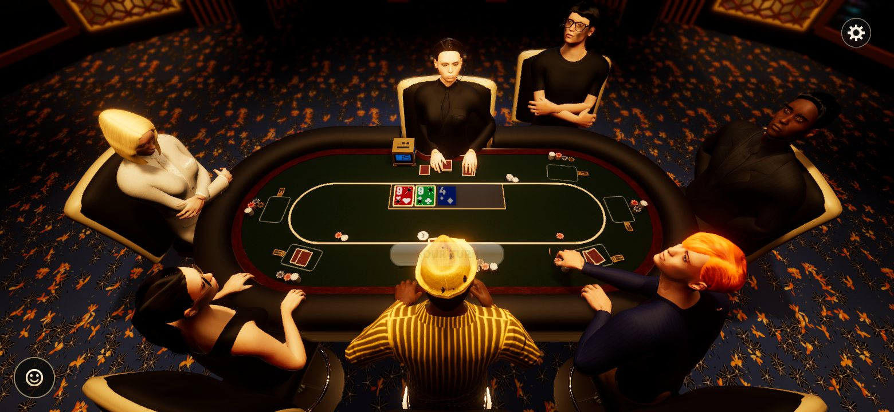
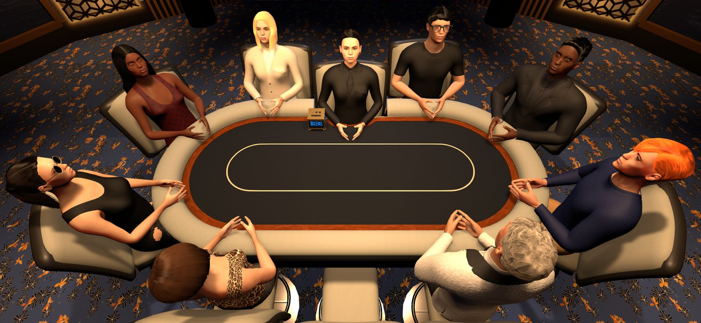
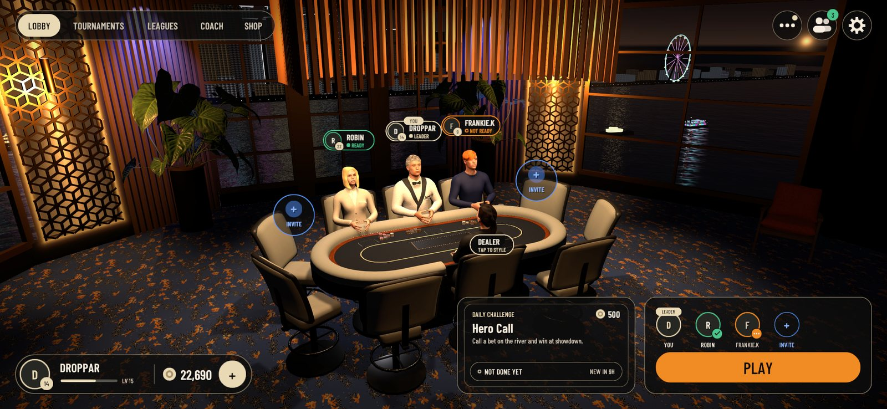

Pull up a chair.
Real poker at a real table. Deal in your friends with a code and play. It's free.
Download for WindowsFree · Windows 10 and 11A card room, not a menu
Every hand is dealt by a dealer at a full-size table, with chips you can see stacked in front of every player.

Play your friends
Open Play a Friend, share the four-letter code, and you're heads-up at a private table.

Live tables
Sit down with real players at six-seat tables. Win pots, complete missions, and level up.

Make it yours
Pick your table, chair, card backs and chip set, all earned by playing.
Get playing in three steps
No account setup outside the game, and no admin password needed.
- DownloadClick Download for Windows above.
- InstallOpen JokerSetup.exe and click through. It takes about a minute.
- PlaySign up in the game, then open Play → Play a Friend.
Questions
Windows says "Windows protected your PC"
Windows shows this for new programs it hasn't seen many people download yet. Click More info, then Run anyway. You only need to do it once.
Is it real money?
No. Joker uses play chips only. You can't win or lose real money.
How do updates work?
When you open Joker and a new version is out, it asks to update, downloads it and installs it for you before the game starts.
How do I uninstall it?
Settings → Apps → Installed apps → Joker → Uninstall.
What do I need?
Windows 10 or 11 (64-bit), about 2 GB of free space, an internet connection, and a graphics card from the last several years.